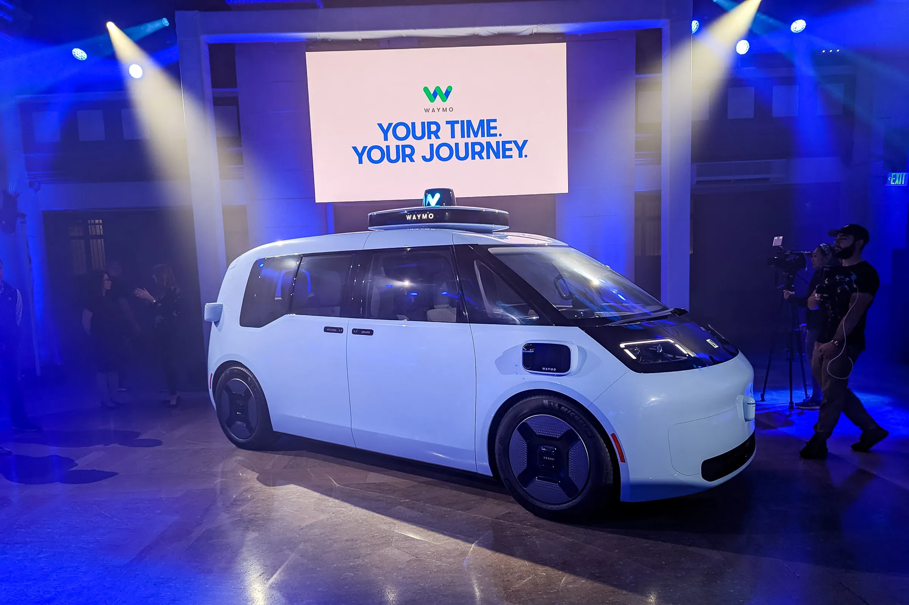
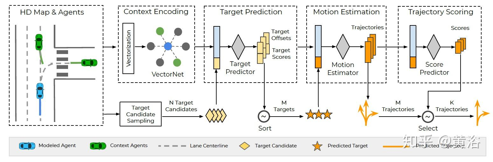
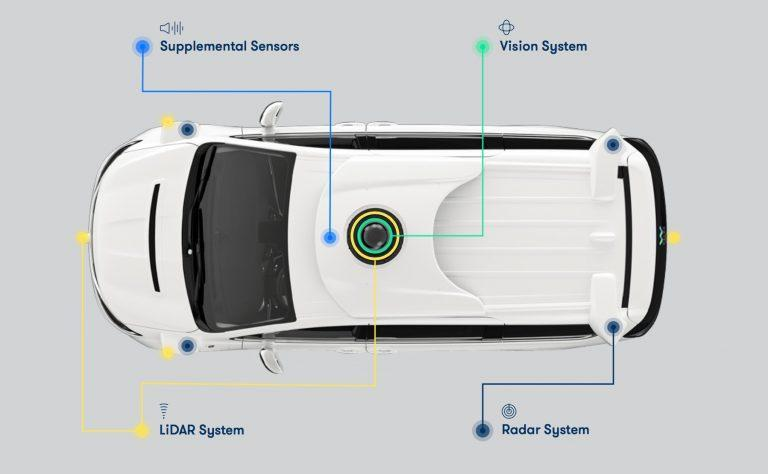
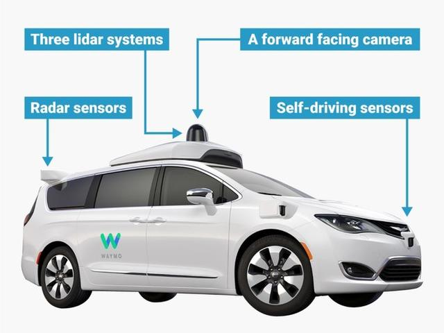
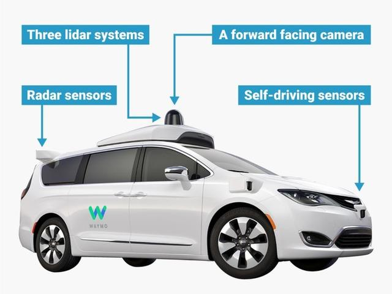
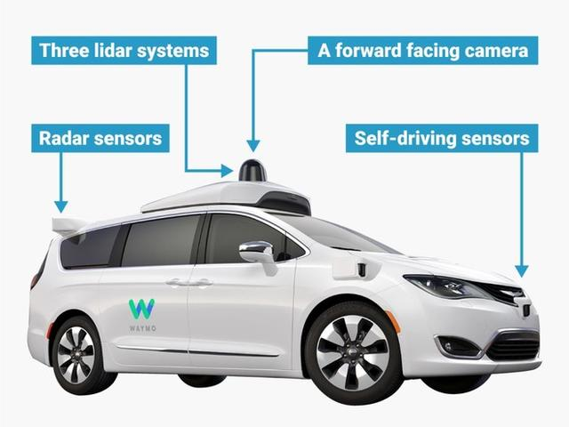

On the future road, vehicles will reach level 5 autonomous driving without the need for manual intervention. However, nowadays, car manufacturers and start-ups are working hard to ensure that Level 3 and Level 4 autonomous driving technologies are correct. Cameras, radars, light detection and ranging (LIDAR), and many other onboard sensors are being used to capture road condition information, notify appropriate driving behavior, and prevent potential accidents. To achieve this goal, nearly 1TB of data will be stored in vehicles in the near future, and this amount of data will surge to over 2TB in the next decade.
However, the future of cars is not just about autonomous driving. Cars will use "vehicle to everything" or "V2X" technology to communicate with each other, road infrastructure, and even pedestrians. Through this way of communication, you can manage the fleet of autonomous vehicle to make travel faster and safer.
Waymo
Waymo is a company that develops autonomous vehicle and is a subsidiary of Alphabet (the parent company of Google).
Robotaxi is a type of taxi that combines autonomous driving technology, with functions such as autonomous driving, intelligent positioning, route planning, and cost settlement. It achieves human vehicle interaction, vehicle road interaction, and vehicle vehicle interaction through advanced sensors, artificial intelligence algorithms, and map navigation technology, thereby providing safe, efficient, and convenient travel services.

The implementation of Robotaxi relies on multiple key technologies:
Autonomous driving technology: including sensor technology, artificial intelligence technology, map navigation technology, control algorithms, etc. These technologies enable Robotaxi to perceive the surrounding environment, recognize traffic signals, plan driving routes, control vehicle movement, and more.
Identification technology: Mainstream applications include cameras, LiDAR, millimeter wave radar, etc. These devices can capture the environmental information around the vehicle in real time and provide decision-making basis for the auto drive system.
Decision making technology: Collecting information through camera vision and combining AI algorithms to understand the scene, achieving autonomous decision-making.
Positioning technology: Using GPS global satellite navigation for positioning, ensuring the accurate driving of Robotaxi in complex road environments.
Communication security technology: including driving safety, functional safety, and network security, to ensure the safety and reliability of Robotaxi during driving.



application prospect
With the continuous development and improvement of autonomous driving technology, Robotaxi will play an increasingly important role in future urban transportation. Compared to traditional taxis, Robotaxi has the characteristics of being more efficient, convenient, safe, and environmentally friendly, which can meet people's new needs for travel services. Meanwhile, the popularization of Robotaxi will also help alleviate urban traffic congestion, reduce environmental pollution, and contribute to sustainable urban development.
In summary, Robotaxi, as a taxi service based on autonomous driving technology, has broad development prospects and application potential. With the continuous advancement of technology and the acceleration of commercialization, Robotaxi will become an important component of future urban transportation.

.jpg) 
